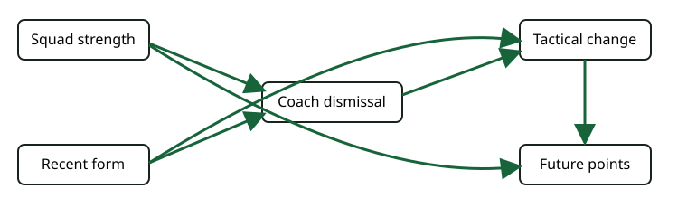

Design language · 14 minutes
Choose controls with a causal graph
Your win: block confounding paths without controlling away the effect you want.

Read paths, not correlations
The causal path is dismissal → tactical change → future points. Back-door paths enter dismissal through recent form or squad strength. Adjust for the common causes to close those paths. Do not adjust for tactical change when estimating the total effect: it is a mediator.
Worked adjustment decision
A sufficient set in this simplified graph is {recent form, squad strength}. League position may be a proxy for both; adding every available variable is unsafe. Conditioning on a collider — for example media crisis caused by both dismissal rumours and player unrest — could open a spurious path.
Assumptions exposed by the graph
- The graph includes every important common cause of dismissal and future points.
- Variables are temporally ordered; post-dismissal data are not disguised as baseline controls.
- The chosen adjustment variables are measured well enough.
- Graphical identification says what would work under the graph; it does not prove the graph.
Primary reading: Hernán & Robins, What If, Chapters 6–7; Ruiz de Villa, Causal Inference for Data Science, causal graphs and adjustment. Ask your teaching agent to test an adjustment set on a graph you draw.